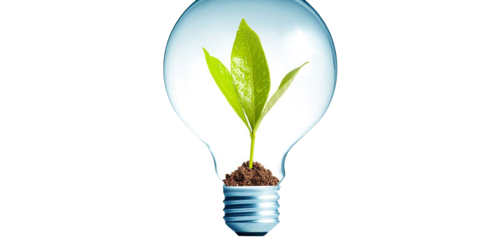
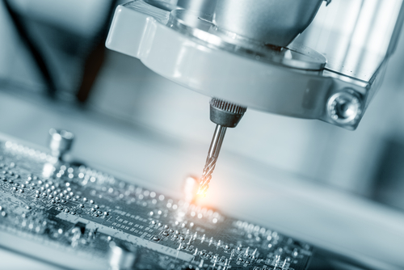

1st Way: Energy Consumption
When using electronics electricity has to be used
- This electricity is not always produced cleanly
- Electronics are always drawing energy, unless they are completely unplugged
- Most people will leave their electronics plugged in and powered on while not using them

2nd Way: Production
To create parts for computers, as with anything, it requires materials and use of Energy
- In many cases, non-renewable materials are used for this production
- Computers require 10 times more chemicals and polutants to produce
- These chemicals produce pollution when combusted which is crucial for production of these devices

3rd Way: E-Waste
People who no longer have a use for an electronic throw it away and it becomes e-waste
- E-waste is a main contributing factor to carbon emissions from ekectronics
- The emissions produced from e-waste comes from the chemicals produced when the materials in electronics are burned
- Materials include: Copper, Aluminum and Iron
- Chemicals include: CO2, polybrominated diphenyl ethers, and polybrominated biphenyls